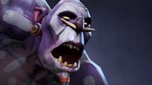
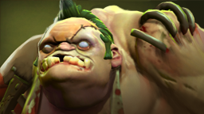
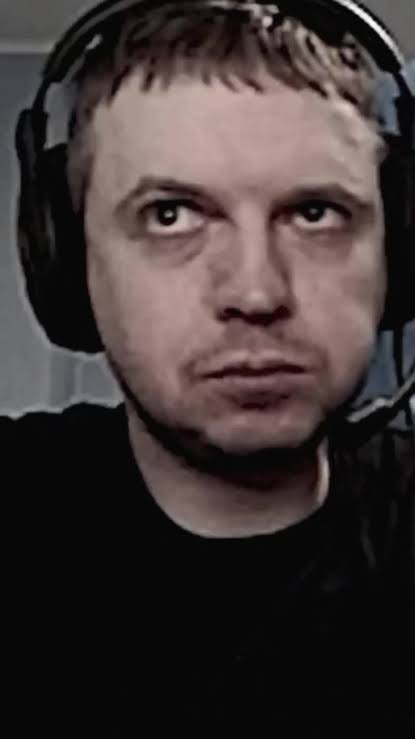
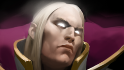
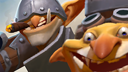

12 танго

Lifestealer покупает 12 Tango. Invoker пытается понять зачем. Потом Naix съедает сразу три.
Фраза: «ДВЕНА-А-АДЦАТЬ ТАНГО!»
Не сухая энциклопедия. Просто вещи, которые дотер понимает с двух слов.
Lifestealer покупает 12 Tango. Invoker пытается понять зачем. Потом Naix съедает сразу три.
Фраза: «ДВЕНА-А-АДЦАТЬ ТАНГО!»

Luna просит Lion нажать два конкретных скилла. Чем дольше он не нажимает, тем громче становится инструкция.
Фраза: «ПЕРВЫЙ СКИЛЛ И ТРЕТИЙ!»

Командная работа выглядит идеально ровно до момента, когда тиммейт укатывается вообще не туда.
Фраза: «ШАМАНЧИК, СВЯЗЫВАЙ!»

Когда нормальная сборка кажется слишком скучной. MOM, Basher и абсолютная вера в план.
Статус: «мэнчик, это meta play».

Серёга Пират решил, что Battle Fury — это слишком обычно. Так появился Radiance Anti-Mage.
План: фармить необычно.
Телепорт прервали в самый неподходящий момент. Матч закончился, а фраза — нет.
Фраза: «МОЁ ТП ОТМЕНЕНО».
Bloodseeker убегает от смерти. Единственная надежда — руна регена. Пудж тоже видит руну.
Фраза: «ПУДЖ, ОСТАВЬ РЕГЕН!»
Abaddon вместо защиты базы идёт ломать вражескую. Сначала его ругают. Через несколько секунд — уже боготворят.
Фраза: «ТОЛИК, ДАВАЙ! ТОЛИК, ЛЕГЕНДА!»
Вся команда защищает базу. Bounty Hunter в это время занимается чем-то очень важным на другой линии.
Фраза: «БАУНТИХАНТЕР, ПРИДИ К НАМ!»
Саппорт готов прилететь спасать мид. Есть одна маленькая проблема: башни уже нет.
Фраза: «ПЕРВАЯ МИНУТА! ГДЕ БАШНЯ?!»
Wraith King почти добивает врага. Два удара. Два промаха. В инвентаре лежит MKB.
Фраза: «ДВА МИССА! С МКБ!»
Enigma нажимает Black Hole на нескольких героев, а обычная песня внезапно превращается в крик победы.
Фраза: «КАТЯ, ВОЗЬМИ ТЕЛЕФОН!»
Отдельный жанр дотерского фольклора: эмоциональные разборы союзников, которые цитируют даже вне матча.
Иногда для мема не нужен эпичный матч. Достаточно одной реплики Juggernaut.
Рундук. Всё.
Nature's Prophet призывает трентов. Юный игрок уже придумал им имя. Получился один.
«А теперь я призову фармлингов!»
По расчётам золото должно быть. На деле его меньше, чем игра успела дать пассивно.
Вердикт: Silencer должен Valve денег.

«Величайший», Dota, реакции, легендарные нарезки и огромное количество фраз, которые давно живут отдельно от стримов.
ПАПИЧ = ПАПИЧAnti-Mage Radiance и «Моё ТП отменено». Один человек — сразу два экспоната.
«Пудж, оставь реген!» — тот случай, когда вся комедия строится на том, что союзник делает ровно обратное.
«Два мисса! С МКБ!» — чистая Dota в одной фразе.
«Катя, возьми телефон!» + Black Hole = момент, который невозможно объяснить человеку без Dota.
Сам по себе отдельный словарь эмоциональной русскоязычной Dota.

Отдельный мем и отдельный персонаж. Никаких «Papich — The Old God» больше нет.
Когда преподаватель уже думает, что понял тему сайта — появляется Старый Бог.
Промахнулся хуком → лаг.
Попал хуком → «изи».

Знает 10 спеллов. Использует Tornado. Виноват саппорт.
«Ещё один слот и дерёмся». Команда услышала это 18 минут назад.

Главная цель — чтобы матч запомнили все десять человек.
Сообщение на 8-й минуте. Игра после него продолжается ещё 45.
Чаще всего пишет человек, который только что пережил 67-минутный триллер.
Универсальное объяснение почти любого личного решения.
Переговоры завершены до начала переговоров.